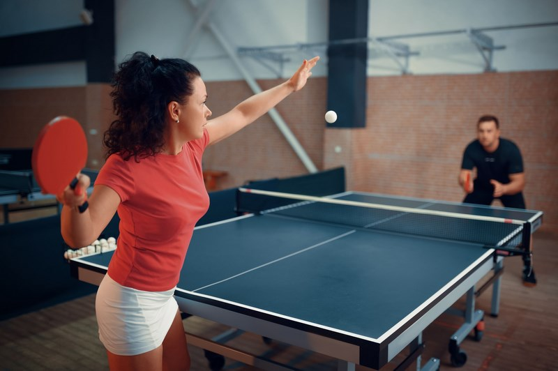

История и развитие настольного тенниса в России
Настольный теннис — это динамичный и зрелищный вид спорта, который завоевал популярность во всём мире, включая Россию. Первые турниры по настольному теннису в России начали проводиться ещё в начале XX века, однако массовое развитие этот вид спорта получил в советское время. С 1950-х годов в стране начали организовываться профессиональные клубы, спортивные школы и чемпионаты, что способствовало воспитанию сильных спортсменов.
В наше время настольный теннис в России активно развивается как на профессиональном, так и на любительском уровне. Федерация настольного тенниса России (ФНТР) играет ключевую роль в организации соревнований, поддержке молодых спортсменов и развитии инфраструктуры.
Выдающиеся российские настольные теннисисты
Среди российских спортсменов, достигших мирового уровня, можно выделить:
- Федор Кузьмин — чемпион Европы, многократный призёр международных турниров, участник Олимпийских игр.
- Кирилл Скачков — участник Олимпийских игр, неоднократный чемпион России, известен своей мощной атакующей игрой.
- Полина Михайлова — ведущая российская спортсменка, известная своими успехами в защитном стиле игры.
Голеева Ольга Сергеевна — преподаватель и популяризатор настольного тенниса
Голеева Ольга Сергеевна — преподаватель Сибирского государственного индустриального университета (СибГИУ) и опытный тренер по настольному теннису. Она активно занимается подготовкой студентов, формированием спортивных команд и организацией соревнований на региональном уровне.
В своей преподавательской деятельности Ольга Сергеевна делает акцент на развитие техники и тактики игры, а также на физическую подготовку спортсменов. Благодаря её усилиям многие студенты СибГИУ добиваются высоких результатов на студенческих чемпионатах.
Кроме того, она участвует в организации массовых спортивных мероприятий, проводит тренировки для начинающих игроков и популяризирует настольный теннис среди молодежи. Её вклад в развитие этого вида спорта в регионе трудно переоценить.
Благодаря усилиям тренеров, спортсменов и энтузиастов, настольный теннис в России продолжает развиваться и привлекать всё больше людей. Этот вид спорта сочетает в себе быстроту, стратегическое мышление и высокую технику, что делает его интересным как для профессионалов, так и для любителей.